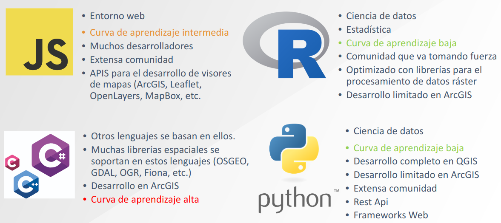
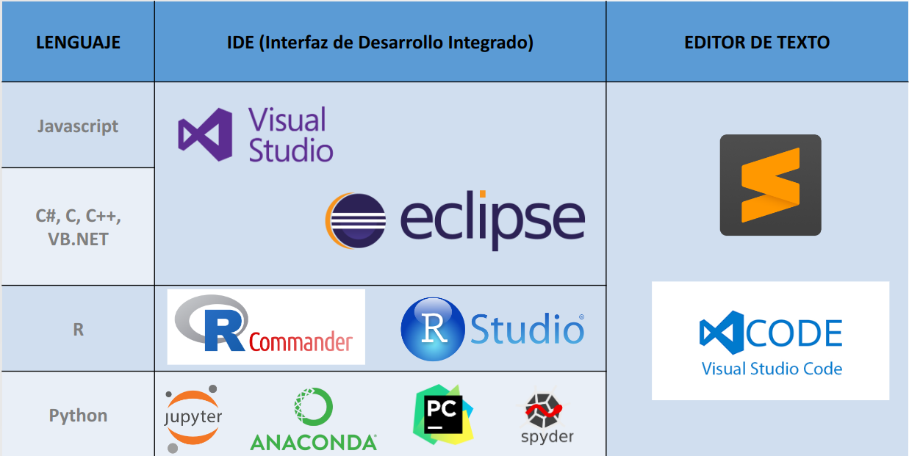
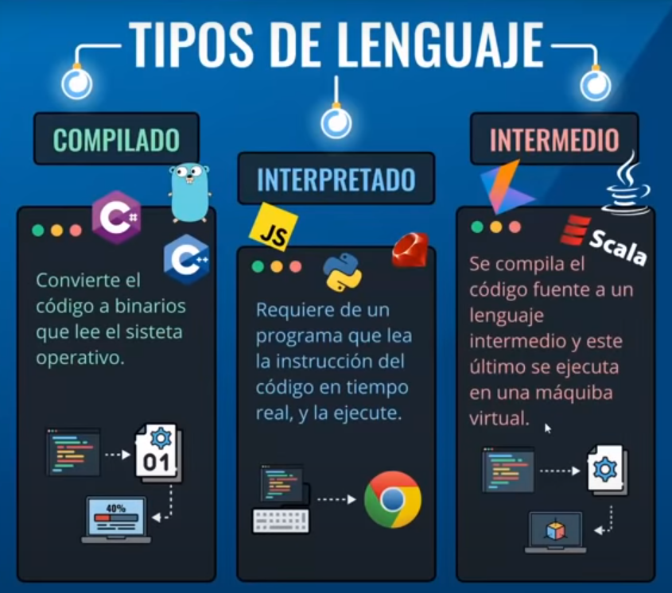
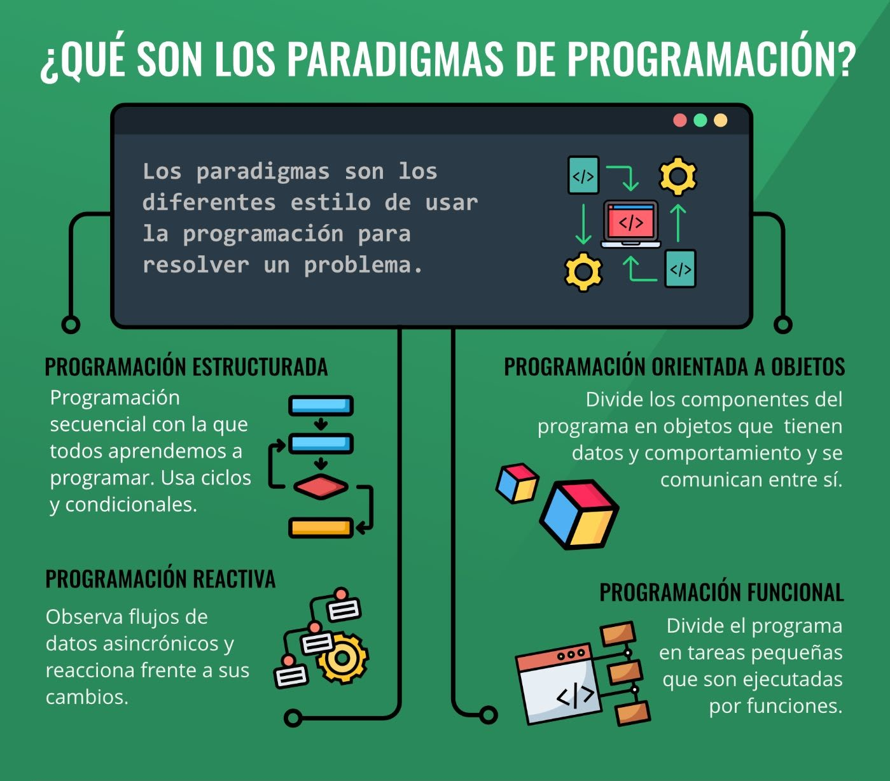

2 Introducción a los lenguajes de programación
2.1 Lenguajes de programación
Un lenguaje de programación es una forma de comunicarnos con una computadora e indicarle qué queremos hacer. En otras palabras, nos permitirá darle instrucciones y reglas que permiten crear herramientas, programas, realizar análisis o tareas específicas.
Existen distintos tipos de lenguaje, según la conexión entre el software y hardware podemos diferenciarlos en lenguajes bajo nivel y de alto nivel. La diferencia se encuentra en lo cerca o lejos que estemos del hardware de nuestro equipo.
Además, podemos diferenciarlos según el propósito o el modo de uso, aquellos que están orientados al desarrollo y aquellos que están orientados al análisis. Los lenguajes orientados al desarrollo se utilizan para crear aplicaciones y programas, mientras que los lenguajes orientados al análisis se utilizan para procesar y analizar datos.

2.2 Interfaz de Desarrollo Integrado (IDE) y editor de texto

2.3 ¿Qué es R?
R es un lenguaje de programación y entorno computacional dedicado a la estadística que proporciona un amplio abanico de herramientas estadísticas (modelos lineales y no lineales, tests estadísticos, análisis de series temporales, algoritmos de clasificación y agrupamiento, etc.)
Permite definir funciones propias. De hecho, gran parte de las funciones de R están escritas en el mismo R, aunque para algoritmos computacionalmente exigentes es posible desarrollar bibliotecas en C, C++ o Fortran que se cargan dinámicamente.
R puede integrarse con distintas bases de datos y existen bibliotecas que facilitan su utilización desde lenguajes de programación interpretados como Python (PythonInR), hereda de S su orientación a objetos.
Otra de las características de R es su capacidad gráfica, que permite generar gráficos con alta calidad (ggplot). R posee su propio formato para la documentación basado en LaTeX.

2.4 ¿Qué es RStudio?
RStudio es un editor para scripts disponible para usuarios de R en todos los sistemas operativos. Es considerado como un entorno de desarrollo integrado (GUI)que combina un interfaz muy intuitiva con herramientas de código muy potentes que permiten sacar el máximo provecho a R.
La ventaja de este editor es que ofrece una serie de opciones no existentes en R, entre otras, por ejemplo, comprobar rápidamente que ningún paréntesis queda sin cerrarse o marcar, copiar y pegar columnas.
Pero además nos da un listado de las variables y nos da una descripción de los bancos de datos que hemos introducido. También tiene una lista de los paquetes instalados y los gráficos realizados.

2.5 ¿Qué otros IDE’s existen para R?
- Tinn-R
- RKward
- Rcommander
- Jupyter notebook
- Visual studio code
- Pycharm
- Eclipse
2.6 Instalación de R, RStudio y RTools
2.6.1 R y RStudio
Primero deberá descargar e instalar R y luego RStudio.
Instalación de R
Para instalar R hay que bajar un fichero ejecutable de la página web del proyecto R: http://www.r-project.org/. Actualmente (Marzo 2023), la versión más reciente de R para el entorno Windows es la 4.2.3 y el ejecutable de tamaño aproximadamente 77Mb tiene el nombre R-4.2.3-win.exe.
Instalación de RStudio
Para instalar RStudio nos dirigimos al enlace http://www.rstudio.org/,la versión en pruebas es gratuita.Una vez bajado este ejecutable, hay que ejecutarlo y seguir las instrucciones del programa de instalación.
2.6.2 RTools
Es un paquete de herramientas para construir paquetes de R. Esto es lo que desea para construir sus propios paquetes en Windows, o para construir R por sí mismo. A partir de R 4.3.0 (2023), R para Windows usa un paquete de cadena de herramientas llamado rtools43.
Esta versión de Rtools incluye gcc 8.3.0 e introduce un nuevo sistema de compilación basado en msys2`, que facilita la compilación y el mantenimiento de R, así como las bibliotecas del sistema que necesitan los paquetes de R en Windows. Las compilaciones recientes de rtools43 también contienen una cadena de herramientas adicional gcc-10 ucrt para probar paquetes de R y bibliotecas del sistema con las compilaciones ucrt experimentales de R-devel.
2.7 Tipos de lenguajes de programación
2.7.1 Lenguaje compilado
Son aquellos lenguajes de alto nivel que como su nombre lo sugiere, requieren de un compilador (programa que traduce un lenguaje de alto nivel en código máquina o lenguaje máquina) para traducirlo y crear la parte ejecutable.
- C++
- Go
2.7.2 Lenguaje interpretado
Son aquellos lenguajes de programación también de alto nivel en donde el código fuente debe ser traducido a un lenguaje que la máquina entienda y pueda realizar, no crean un archivo externo.
- Ruby
- Javascript
- Python
- R
Los lenguajes de alto nivel permiten escribir instrucciones en un idioma muy parecido al inglés así como hacer uso de notaciones matemáticas comunes.
2.7.3 Lenguaje intermedio
Los lenguajes intermedios son compilados hacia programas intermedios y luego interpretados, esto permite que pueda ser ejecutado desde cualquier sistema operativo sin necesidad de crear ejecutables.
- Java
- C#

2.8 Paradigmas de programación
Un paradigma de programación es una manera o estilo de programación de software. Se trata de un conjunto de métodos sistemáticos aplicables en todos los niveles del diseño de programas para resolver problemas computacionales.
2.8.1 Programación Orientado a Objetos
Se construyen modelos de objetos que representan elementos (objetos) del problema a resolver, que tienen características y funciones. Permite separar los diferentes componentes de un programa, simplificando así su creación, depuración y posteriores mejoras. La programación orientada a objetos disminuye los errores y promociona la reutilización del código. Es una manera especial de programar, que se acerca de alguna manera a cómo expresaríamos las cosas en la vida real.
2.8.2 Programación Funcional
La programación funcional es un paradigma declarativo. Nos enfocaremos en “qué” estamos haciendo y no en “cómo” se está haciendo que sería el enfoque imperativo. Esto quiere decir que se expresa nuestra lógica sin describir controles de flujo, ni ciclos ni condicionales.
